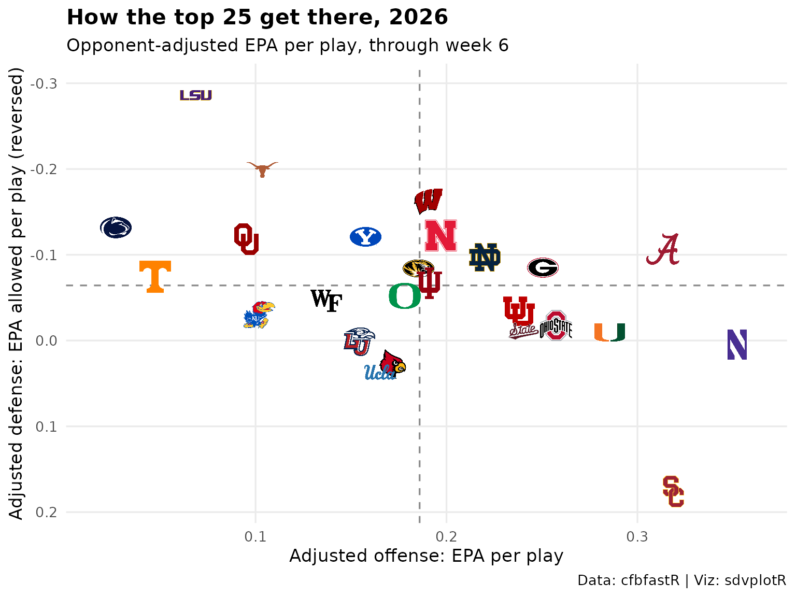

College Football Weekly Leaderboard
Source:vignettes/articles/leaderboard-cfb-weekly.Rmd
leaderboard-cfb-weekly.RmdOn this page
Updated 2026-10-09: the 2026 season through week 6.
This page is rebuilt every week with the site. It rates every FBS team by opponent-adjusted EPA per play, a simple cousin of SP+ built from the play-by-play, for the latest season with data: the season to date during the fall, the final season in the offseason. Data: cfbfastR play-by-play and CollegeFootballData.com schedules.
Picking the season
Week 0 is in late August, so before then the calendar points at last
season. cfbfastR::load_cfb_pbp() errors for a season past
its most recent one and warns, returning no rows, for a season whose
file is not up yet; either way the page steps back one season. The
schedule says whether regular-season games are left, which is what the
status line reports. It is a live API call, so it goes through
live(): if CollegeFootballData.com does not answer, the
page still rates every team from the play-by-play and leaves the records
blank for that week instead of failing the site build.
library(sdvplotR)
library(dplyr, warn.conflicts = FALSE)
library(ggplot2)
library(gt)
today <- Sys.Date()
# Week 0 is in late August, so before then the calendar points at last season
current <- as.integer(format(today, "%Y")) - (format(today, "%m") < "08")
# A season's play-by-play, or NULL when it is not published: load_cfb_pbp() errors
# for a season past cfbfastR's most recent one, and warns and returns no rows for
# one whose file is not up yet
play_by_play <- function(season) {
pbp <- tryCatch(suppressWarnings(cfbfastR::load_cfb_pbp(season)), error = function(e) NULL)
if (NROW(pbp) == 0) NULL else pbp
}
season <- current
pbp <- play_by_play(season)
if (is.null(pbp)) {
season <- current - 1
pbp <- play_by_play(season)
}
stopifnot(!is.null(pbp))
# A live API call, or NULL when the API does not answer: one bad week then shows
# a note instead of failing the whole site build
live <- function(expr) tryCatch(expr, error = function(e) NULL)
# CollegeFootballData.com's schedule (a live API: set CFBD_API_KEY, a free key)
schedule <- live(cfbfastR::load_cfb_schedules(season))
schedule_ok <- NROW(schedule) > 0
if (schedule_ok) {
played <- schedule |>
filter(completed) |>
arrange(start_date, game_id)
week <- max(played$week[played$season_type == "regular"])
left <- filter(schedule, !completed)
} else {
week <- max(pbp$week)
}
if (!schedule_ok) {
status <- sprintf(
"the %d season through week %d. CollegeFootballData.com's schedule was unavailable when this page was built, so records are missing this week; they return next week.",
season, week
)
through <- paste("through week", week)
} else if (any(left$season_type == "regular")) {
status <- sprintf("the %d season through week %d.", season, week)
through <- paste("through week", week)
} else if (nrow(left) > 0) {
status <- sprintf("the %d regular season is final; bowls and the playoff are under way.", season)
through <- "regular season and finished bowls"
} else {
status <- sprintf("the offseason, so this is the final %d season, bowls and playoff included.", season)
through <- "final"
}The play-by-play carries each game’s teams with their division and conference, which picks out the FBS teams. Records come from the schedule’s played games, against FBS and FCS opponents alike.
sides <- bind_rows(
distinct(pbp, game_id, week, school = home, conference = home_team_conference, division = home_team_division),
distinct(pbp, game_id, week, school = away, conference = away_team_conference, division = away_team_division)
)
fbs <- sides |>
filter(division %in% "fbs") |>
arrange(week, game_id) |>
group_by(school) |>
summarise(conference = last(conference), .groups = "drop")
if (schedule_ok) {
records <- bind_rows(
transmute(played, school = home_team, win = home_points > away_points),
transmute(played, school = away_team, win = away_points > home_points)
) |>
group_by(school) |>
summarise(record = paste(sum(win), sum(!win), sep = "-"), .groups = "drop")
fbs <- left_join(fbs, records, by = "school")
} else {
fbs$record <- NA_character_ # shown as a dash
}
nrow(fbs)
#> [1] 1381. Top 25 by adjusted EPA per play
The ratings use FBS-against-FBS pass and run plays, minus garbage time (a lead of more than 43 points in the first quarter, 37 in the second, 27 in the third or 21 in the fourth). One pass of opponent adjustment credits each offensive play for the defense it faced (that defense’s EPA allowed per play against the FBS average), and each defensive play for the offense it faced. Net is adjusted offense minus adjusted defense.
plays <- pbp |>
filter(
pass == 1 | rush == 1, !is.na(EPA),
pos_team %in% fbs$school, def_pos_team %in% fbs$school
) |>
mutate(margin = c(43, 37, 27, 21)[period]) |> # NA in overtime, which is never garbage time
filter(!coalesce(abs(pos_score_diff_start) > margin, FALSE)) |>
arrange(game_id, id_play) # a fixed order, so every mean sums the same way each week
avg <- mean(plays$EPA)
defense_allows <- plays |>
group_by(def_pos_team) |>
summarise(allowed = mean(EPA), .groups = "drop")
offense_gains <- plays |>
group_by(pos_team) |>
summarise(gained = mean(EPA), .groups = "drop")
adjusted <- plays |>
left_join(defense_allows, by = "def_pos_team") |>
left_join(offense_gains, by = "pos_team") |>
mutate(adj_off = EPA - (allowed - avg), adj_def = EPA - (gained - avg))
ratings <- inner_join(
adjusted |> group_by(school = pos_team) |> summarise(off = mean(adj_off), .groups = "drop"),
adjusted |> group_by(school = def_pos_team) |> summarise(dfn = mean(adj_def), .groups = "drop"),
by = "school"
) |>
mutate(net = off - dfn) |>
inner_join(fbs, by = "school") |>
arrange(desc(net), school) |> # the school breaks a tie, so an unchanged week renders the same
mutate(rank = row_number())
top25 <- ratings |>
slice_head(n = 25) |>
mutate(logo = school, conf_logo = conference) |>
select(rank, logo, school, conf_logo, conference, record, off, dfn, net)
head(top25)
#> # A tibble: 6 × 9
#> rank logo school conf_logo conference record off dfn net
#> <int> <chr> <chr> <chr> <chr> <chr> <dbl> <dbl> <dbl>
#> 1 1 Alabama Alabama SEC SEC 5-0 0.313 -0.107 0.420
#> 2 2 LSU LSU SEC SEC 4-1 0.0688 -0.286 0.355
#> 3 3 Wisconsin Wisconsin Big Ten Big Ten 4-1 0.191 -0.161 0.351
#> 4 4 Northwestern Northwes… Big Ten Big Ten 3-1 0.352 0.00461 0.348
#> 5 5 Georgia Georgia SEC SEC 5-0 0.251 -0.0850 0.336
#> 6 6 Nebraska Nebraska Big Ten Big Ten 5-0 0.197 -0.122 0.319sdvplotR has a row for every FBS conference too, so
gt_sdv_logos() draws the conference marks from the
play-by-play’s conference names, next to the school logos.
top25 |>
gt(id = "cfb-top25") |>
tab_header(
title = paste("College football top 25,", season),
subtitle = paste("Opponent-adjusted EPA per play,", through)
) |>
fmt_number(c(off, dfn, net), decimals = 3, force_sign = TRUE) |>
sub_missing(record, missing_text = "—") |>
data_color(net, palette = c("#f7f7f7", "#2e8b57"), domain = c(0, max(top25$net))) |>
tab_spanner("Adjusted EPA per play", c(off, dfn, net)) |>
cols_label(
rank = "", logo = "", school = "Team", conf_logo = "", conference = "Conference",
record = "Record", off = "Offense", dfn = "Defense", net = "Net"
) |>
tab_source_note(paste(
"Data: cfbfastR play-by-play and CollegeFootballData.com schedules.",
"FBS vs FBS pass and run plays, garbage time removed; defense is EPA allowed",
"(lower is better). Viz: sdvplotR"
)) |>
gt_sdv_logos(columns = logo, sport = "cfb", height = 26) |>
gt_sdv_logos(columns = conf_logo, sport = "cfb", height = 20) |>
gt_theme_ncaa()| College football top 25, 2026 | ||||||||
| Opponent-adjusted EPA per play, through week 6 | ||||||||
|
toss_out_spanner_dev
|
||||||||
|---|---|---|---|---|---|---|---|---|
| Team | Conference | Record |
Adjusted EPA per play
|
|||||
| Offense | Defense | Net | ||||||
| 1 |  |
Alabama |  |
SEC | 5-0 | +0.313 | −0.107 | +0.420 |
| 2 |  |
LSU | |
SEC | 4-1 | +0.069 | −0.286 | +0.355 |
| 3 |  |
Wisconsin |  |
Big Ten | 4-1 | +0.191 | −0.161 | +0.351 |
| 4 |  |
Northwestern | |
Big Ten | 3-1 | +0.352 | +0.005 | +0.348 |
| 5 |  |
Georgia | |
SEC | 5-0 | +0.251 | −0.085 | +0.336 |
| 6 |  |
Nebraska | |
Big Ten | 5-0 | +0.197 | −0.122 | +0.319 |
| 7 |  |
Notre Dame |  |
FBS Independents | 5-0 | +0.220 | −0.097 | +0.317 |
| 8 |  |
Texas | |
SEC | 4-0 | +0.104 | −0.199 | +0.302 |
| 9 |  |
Miami |  |
ACC | 5-0 | +0.285 | −0.009 | +0.295 |
| 10 |  |
BYU |  |
Big 12 | 4-0 | +0.158 | −0.121 | +0.279 |
| 11 |  |
Ohio State | |
Big Ten | 4-1 | +0.257 | −0.018 | +0.275 |
| 12 |  |
Utah | |
Big 12 | 4-0 | +0.238 | −0.034 | +0.272 |
| 13 |  |
Missouri | |
SEC | 4-1 | +0.185 | −0.084 | +0.269 |
| 14 |  |
Indiana | |
Big Ten | 5-0 | +0.191 | −0.067 | +0.258 |
| 15 |  |
Mississippi State | |
SEC | 4-1 | +0.240 | −0.011 | +0.251 |
| 16 |  |
Oregon | |
Big Ten | 3-1 | +0.178 | −0.052 | +0.230 |
| 17 |  |
Oklahoma | |
SEC | 2-2 | +0.095 | −0.118 | +0.213 |
| 18 |  |
Wake Forest | |
ACC | 4-1 | +0.137 | −0.047 | +0.183 |
| 19 |  |
Penn State | |
Big Ten | 3-2 | +0.027 | −0.132 | +0.159 |
| 20 |  |
Liberty |  |
Conference USA | 5-1 | +0.154 | +0.001 | +0.153 |
| 21 |  |
Louisville | |
ACC | 2-3 | +0.172 | +0.028 | +0.144 |
| 22 |  |
USC | |
Big Ten | 5-1 | +0.319 | +0.176 | +0.143 |
| 23 |  |
Kansas | |
Big 12 | 2-2 | +0.102 | −0.030 | +0.132 |
| 24 |  |
UCLA | |
Big Ten | 4-0 | +0.165 | +0.037 | +0.128 |
| 25 |  |
Tennessee | |
SEC | 4-1 | +0.047 | −0.074 | +0.122 |
| Data: cfbfastR play-by-play and CollegeFootballData.com schedules. FBS vs FBS pass and run plays, garbage time removed; defense is EPA allowed (lower is better). Viz: sdvplotR | ||||||||
2. Every FBS team, by conference
One row per conference, ordered by its average rating, each team’s
logo at its net rating (nudged up and down in turn so neighbors overlap
less). The bar in the conference’s color spans it from its lowest team
to its highest, and the tick marks its average.
scale_colour_sdv() and scale_y_sdv() take the
conference names like any team key, so the colors and the conference
marks on the axis come from sdvplotR (theme_y_sdv() lets
the axis draw images).
conf_order <- ratings |>
group_by(conference) |>
summarise(mean_net = mean(net), lo = min(net), hi = max(net), .groups = "drop") |>
arrange(mean_net, conference) |>
mutate(row = row_number(), conference = factor(conference, levels = conference))
teams <- ratings |>
inner_join(select(conf_order, conference, row) |> mutate(conference = as.character(conference)), by = "conference") |>
arrange(row, net, school) |>
group_by(conference) |>
mutate(y = row + if_else(row_number() %% 2 == 0, 0.17, -0.17)) |>
ungroup()
ggplot() +
geom_vline(xintercept = 0, linetype = "dashed", colour = "grey60") +
geom_segment(
data = conf_order,
aes(x = lo, xend = hi, y = conference, yend = conference, colour = conference),
linewidth = 7, alpha = 0.35, lineend = "round"
) +
geom_point(
data = conf_order, aes(x = mean_net, y = conference, colour = conference),
shape = "|", size = 9
) +
# a discrete axis still takes numbers: row 3 is the third conference, so 3.17 sits just above it
geom_sdv_logos(data = teams, aes(x = net, y = y, team = school), sport = "cfb", height = 0.04) +
scale_colour_sdv(sport = "cfb", guide = "none") +
scale_y_sdv(sport = "cfb", size = 30, expand = expansion(add = 0.6)) +
scale_x_continuous(expand = expansion(mult = 0.04)) +
labs(
title = paste("FBS teams by conference,", season, through),
subtitle = "Net opponent-adjusted EPA per play; the tick marks the conference average",
x = "Net adjusted EPA per play", y = NULL,
caption = "Data: cfbfastR | Viz: sdvplotR"
) +
theme_minimal(base_size = 13) +
theme(
plot.title = element_text(face = "bold"),
panel.grid.minor = element_blank(),
panel.grid.major.y = element_blank()
) +
theme_y_sdv()
#> Warning in png::readPNG(get_file(path), native = TRUE): libpng warning: iCCP:
#> known incorrect sRGB profile
3. Offense and defense of the top 25
The two halves of the rating for the top 25, one logo each. The defense axis is reversed so the better defenses sit higher, and the dashed lines are the top 25’s averages.
ggplot(top25, aes(x = off, y = dfn)) +
geom_hline(yintercept = mean(top25$dfn), linetype = "dashed", colour = "grey55") +
geom_vline(xintercept = mean(top25$off), linetype = "dashed", colour = "grey55") +
geom_sdv_logos(aes(team = school), sport = "cfb", height = 0.075) +
scale_x_continuous(expand = expansion(mult = 0.08)) +
scale_y_reverse(expand = expansion(mult = 0.08)) +
labs(
title = paste("How the top 25 get there,", season),
subtitle = paste("Opponent-adjusted EPA per play,", through),
x = "Adjusted offense: EPA per play",
y = "Adjusted defense: EPA allowed per play (reversed)",
caption = "Data: cfbfastR | Viz: sdvplotR"
) +
theme_minimal(base_size = 13) +
theme(plot.title = element_text(face = "bold"), panel.grid.minor = element_blank())
Related
- NFL weekly runs the same EPA tables on nflverse data.
- College Football walks through cfbfastR and sdvplotR more broadly.
- Social graphics, automated posts tables like these on a schedule.